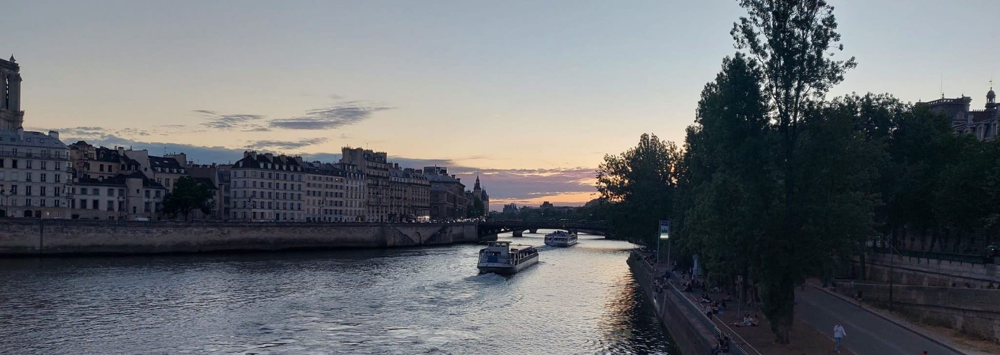

I am an applied mathematician working in Mathematical Biology, with a focus on mathematical models of cell population dynamics in cancer and development.
I am particularly interested in the analysis, numerical simulation and empirical validation of models comprising nonlinear integro-differential equations, to investigate the spatio-temporal sorting of heterogeneous cell populations.
